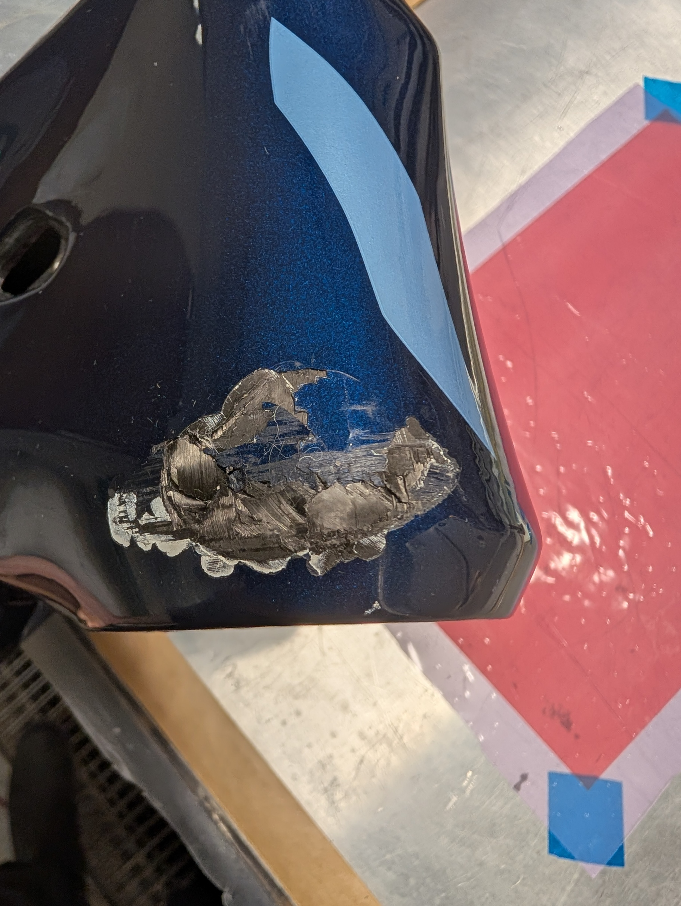
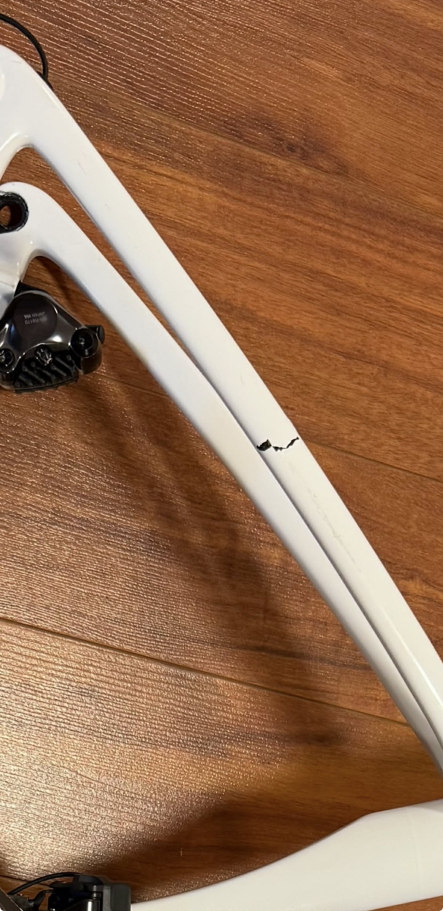

Réparation de cadres de vélo en carbone
Votre cadre est brisé ? Ne le jetez pas!
Contrairement à ce que plusieurs pensent, le carbone se répare très bien : avec une intervention professionnelle, vous pouvez retrouver la solidité et l’intégrité de votre vélo, à un coût souvent bien inférieur au remplacement complet du cadre.
Nous restaurons l’intégrité structurale de votre cadre carbone en appliquant des méthodes de réparation éprouvées (découpe contrôlée, préparation des plis, stratification orientée, cure et finition).
Défauts pris en charge
- Fissures localisées (tube supérieur, bases, haubans, douille)
- Impacts de projection (gravillons, chutes)
- Délamination/éclatement de surface
Processus type
- Diagnostic : photos, localisation, contrôle tap‑test.
- Préparation : délardage conique, ponçage, nettoyage.
- Stratification : empilement de plis orientés, époxy adaptée.
- Polymérisation : sous vide/chauffe contrôlée.
- Finition : ponçage, vernis/peinture locale.
- Contrôle : inspection finale, recommandations d’usage.
Exemples de bris que nous pouvons réparer
Voici quelques exemples de types de bris que nous avons traités avec succès. Chaque cas est unique, mais cela vous donnera une idée des réparations que nous pouvons réaliser pour restaurer votre cadre de vélo en carbone à son état optimal.






Et beaucoup plus encore ! Contacte-nous pour en savoir plus.